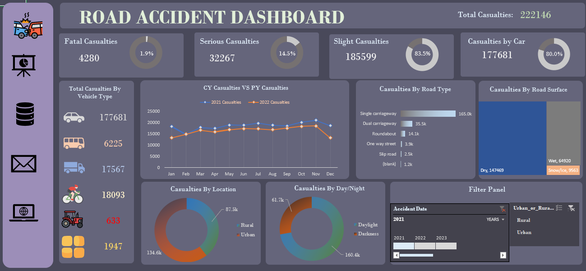
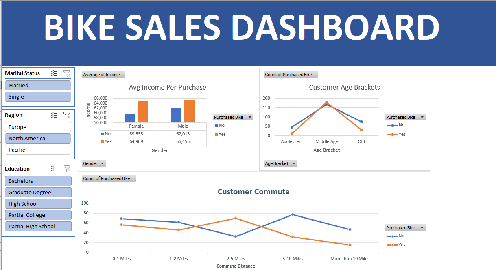

In this project, I harnessed the power of Excel, utilizing pivot tables, formulas, and visualizations to delve into road accident data.
This journey started with data cleaning and pre-processing, ensuring the dataset's integrity,
followed by an in-depth analysis that revealed meaningful patterns and trends.
Through the art of data visualization, I translated complex information into comprehensible visuals,
culminating in the creation of a user-friendly dashboard/report.


In this project, I harnessed the power of data analysis and visualization to gain valuable insights into bike sales.
With a keen focus on income per bike purchase, segmented by gender, purchases by age bracket, and the correlation between purchases
and commute distance, this dashboard served as a window into the intricacies of consumer behaviour.
I employed a diverse range of SQL skills to analyze and visualize pandemic-related data in this project.
My SQL queries covered tasks such as data cleaning, aggregation, window functions, and view creation.
I dissected the data on both a global and continental scale, revealing critical insights.
These insights encompassed understanding the likelihood of death following COVID-19 contraction in various regions,
assessing the impact of vaccinations on the population, and pinpointing countries with the highest infection and death rates.
In this project, I showcased my proficiency in database querying and management. In this SQL query, I extracted product IDs from a database table by
employing a subquery to filter products based on their category. This demonstrates my ability to construct precise and efficient
SQL statements for data retrieval, a fundamental skill in the realm of database operations.
The query underscores my capability to harness the power of subqueries to tailor data extraction according to
specific criteria, a skill invaluable in data analysis and reporting.
This project involved web scraping and sentiment analysis of customer reviews related to British Airways using Python.
The primary skills employed in this project included web scraping with BeautifulSoup, text data pre-processing
(including text cleaning, tokenization, POS tagging, stopwords removal, and lemmatization), and sentiment analysis
using the VADER (Valence Aware Dictionary and Sentiment Reasoner) sentiment analysis tool.
The sentiment analysis allowed categorizing the reviews as positive, negative, or neutral, and the results were visualized
through a pie chart. Furthermore, a word cloud was generated to visualize the most prominent words in the customer reviews.
The project involved building a predictive model for airline customer bookings. It included data preprocessing,
class imbalance handling with SMOTE, and the training of an XGBoost model with hyperparameter tuning.
The project required skills in data analysis, feature engineering, classification modeling, and addressing class imbalance.

This project involved the analysis of HR data to provide insights into employee performance and
satisfaction for both current and past employees. I leveraged Power BI's capabilities to create
interactive dashboards and reports that showcased key HR metrics, such as employees due for promotion,
employee engagement, commute distance and performance evaluations. My skills in data visualization,
dashboard creation, and data analysis were essential in delivering a visually appealing
and insightful solution that can aid organizations in making data-driven HR decisions.